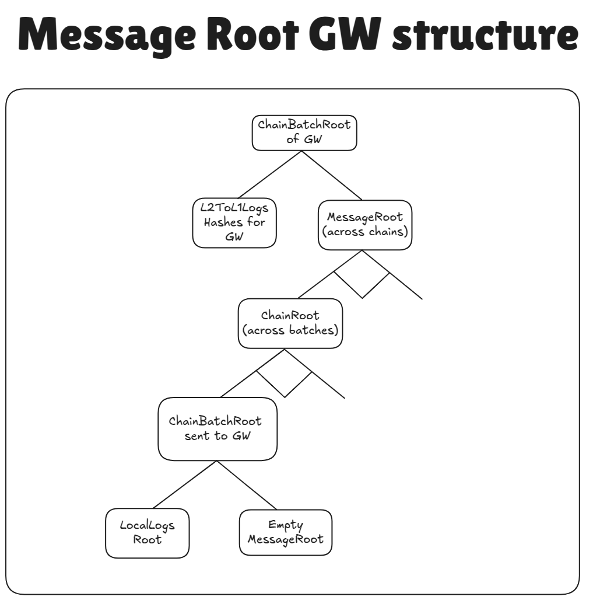

Nested L2→GW→L1 messages tree design for Gateway
Introduction
This document assumes that the reader is already aware of how L2→L1 logs are aggregated into the MessageRoot and what the Gateway is. To reduce interactions with L1, the Gateway gathers all the ChainBatchRoots from all the chains into the tree with following structure:

Proving logs for chains settling on Gateway
Proving these logs is almost the same as proving interop logs. For chain settling on Gateway the MessageRoot of Gateway is aggregated with the LocalLogsRoot of GW, and the ChainBatchRoot is sent to L1 to the GW’s diamond proxy. The only difference is that the ChainBatchRoot is not stored in the MessageRoot but in the LocalLogsRoot.
Trust assumptions
Note, that the _proof field is provided by potentially malicious users. The only part that really checks anything with L1 state is the final step of the aggregated proof verification, i.e. that the settled ChainBatchRoot of batch of the final top layer was present on L1.
It puts a lot of trust in the settlement layers as it can steal funds from chains and “verify” incorrect L2→GW→L1 logs if it wants to. It is the job of the chain itself to ensure that it trusts the aggregation layer. For this reason, all settlement layers have to be whitelisted by governance.
Also, note that that address of the settlement layer is provided by the user. Assuming that the settlement layer is trusted, this scheme works fine, since the chainIdLeaf belongs to it only if the chain really ever settled there. I.e. so the protection from maliciously chosen settlement layers is the fact that the settlement layers are trusted to never include batches that they did not have.
Data availability guarantees
We want to maintain the security invariant that users can always withdraw their funds from rollup chains. In other words, all L2→GW→L1 logs that come from rollups should be eventually propagated to L1, and also regardless of how other chains behave an honest chain should always provide the ability for their users to withdraw.
Firstly, unless the chain settles on L1, this requires a trusted settlement layer. That is, not trusted operator of the gateway, but it works properly, i.e. appends messages correctly, publishes the data that it promises to publish, etc. This is already the case for the Gateway as it is a ZK rollup fork of Era, and while the operator may censor transactions, it can not lie and is always forced to publish all state diffs.
Secondly, we guarantee that all the stored ChainIdLeafs are published on L1, even for Validiums. Publishing a single 32 byte value per relatively big Gateway batch has little price for Validiums, but it ensures that the settlement root of the gateway can always be constructed. And, assuming that the preimage for the chain root could be constructed, this gives an ability to ability to recover the proof for any L2→GW→L1 coming from a rollup.
But how can one reconstruct the total chain tree for a particular rollup chain? A rollup would relay all of its pubdata to L1, meaning that by observing L1, the observer would know all the L2→GW→L1 logs that happened in a particular batch. It means that for each batch it can restore the LocalLogsRoot (in case the MessageRoot is non-zero, it could be read from e.g. the storage which is available via the standard state diffs). This allows to calculate the BatchRootLeaf for the chain. The only thing missing is understanding which batches were finalized on gateway in order to construct the merkle path to the ChainRootLeaf.
To understand which SL was used by a batch for finalization, one could simply brute force over all settlement layers ever used to find out where the chainBatchRoot is stored. This number is expected to be rather small.